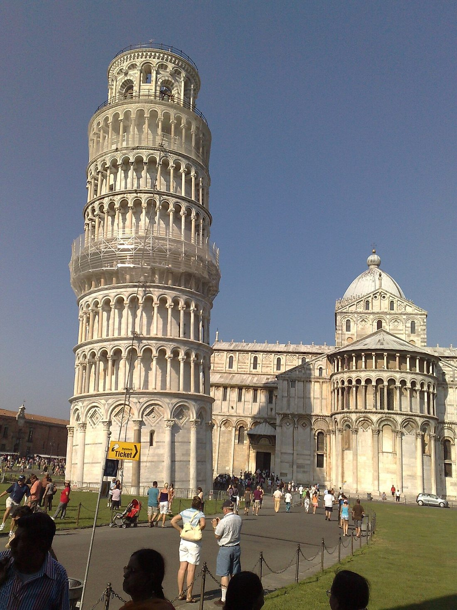
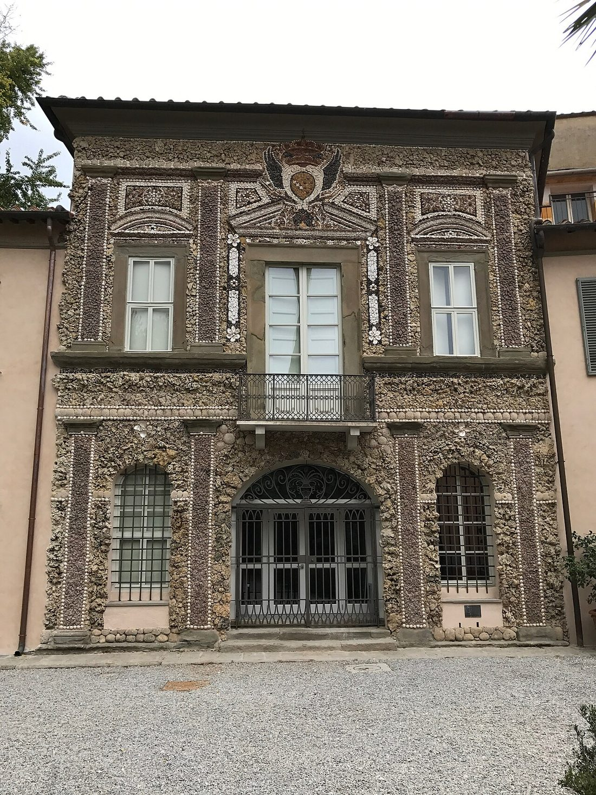
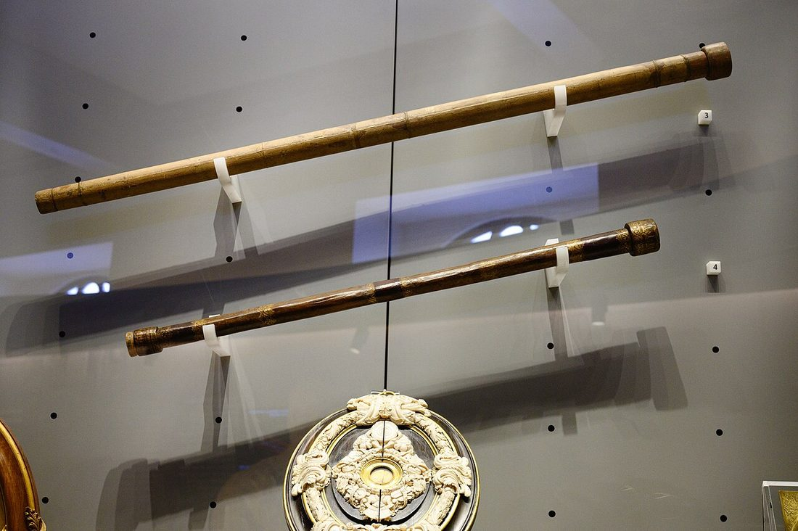
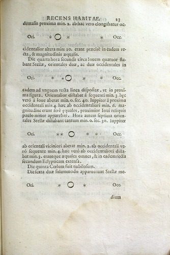
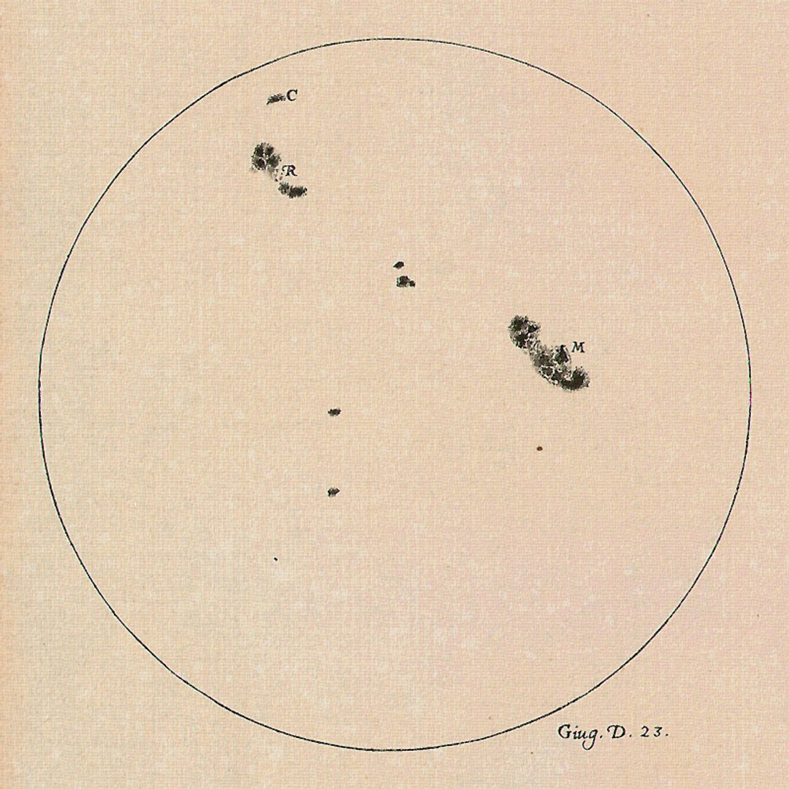
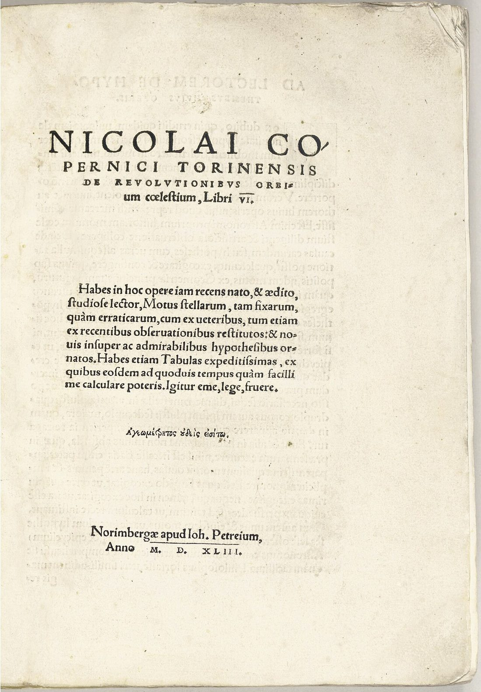
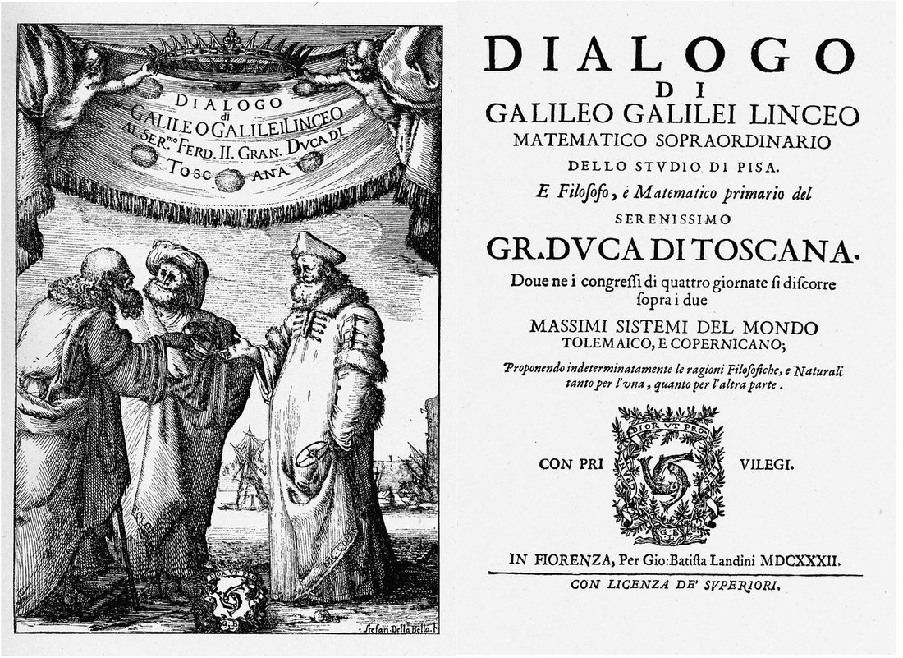
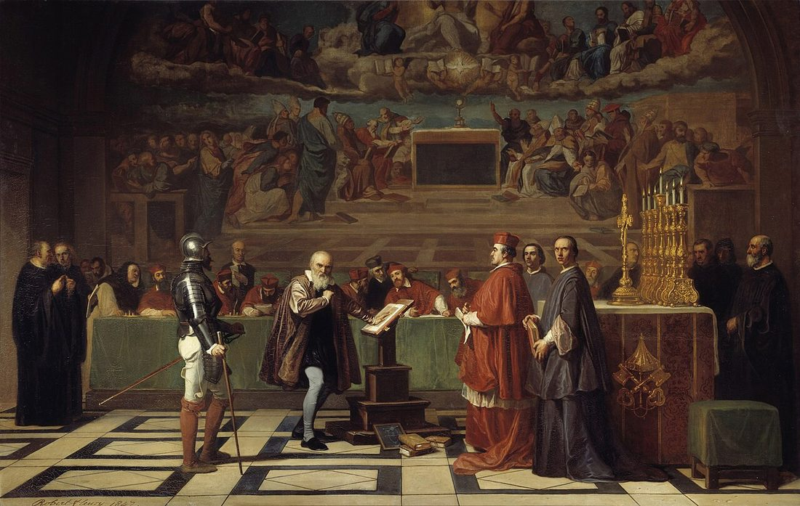
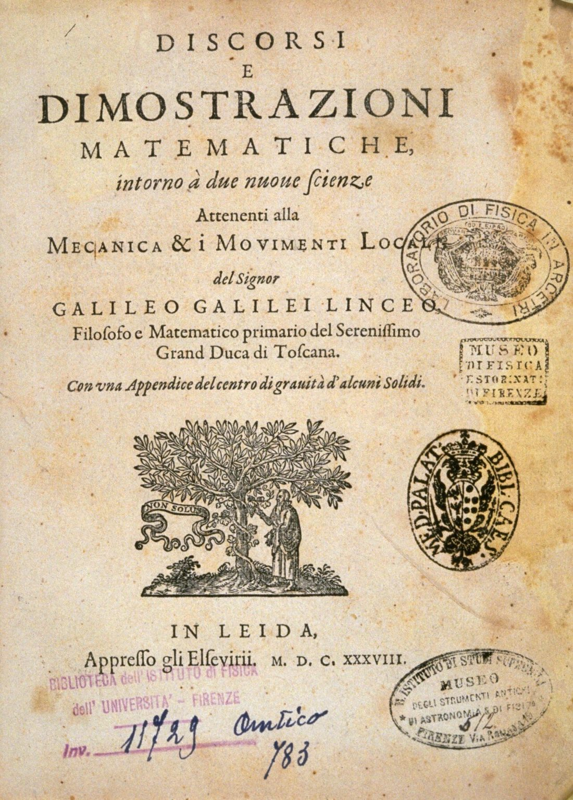
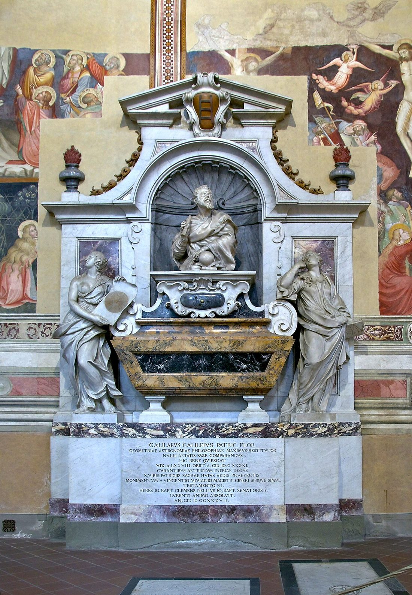

2 月 15 日，伽利略·伽利雷生于意大利比萨一个没落贵族家庭。父亲希望他学医谋生，把他送进了比萨大学。

进入比萨大学学医，却在一次旁听几何课后迷上了数学。他逐渐意识到：比起背书，自己更爱用逻辑和证据想问题。
约在比萨大教堂，他注意到吊灯摆动：不论摆幅大小，单次用时几乎相同（摆的等时性）。这是他第一个重要的物理观察。
转任帕多瓦大学数学教授。威尼斯共和国治下学术更自由，他完成了大量力学与运动学研究，也在此迎来了望远镜的契机。

听到荷兰人发明“望远镜”的消息，他自己磨透镜做出放大约 20 倍的版本，并把它指向了星空——天文学革命就此引爆。

他观测到木星旁四颗绕转的小星（木星卫星），同年出版《星空信使》，公布望远镜下的新世界，一举成名。
离开帕多瓦，移居佛罗伦萨，担任托斯卡纳大公的“宫廷首席数学家”。名望上升，风险也随之而来。

他观测并出版太阳黑子（太阳黑子）研究，进一步冲击“天体完美不变”的旧观念，也招来更多质疑与敌意。

罗马教廷判定日心说“荒谬且与经文冲突”，并正式警告伽利略不得宣扬或捍卫它。他暂时收敛，但并未放弃自己的想法。

出版《两大世界体系对话》，借三人对话力挺日心说。尽管拿到了出版许可，仍被视为挑衅。

被召到罗马受审，被迫公开放弃日心说，判处终身软禁。科学史与思想自由史上最具象征性的冲突之一。

在软禁中完成《两种新科学》，系统总结运动学与材料力学，直接启迪了后来的牛顿。

1 月 8 日，伽利略在软禁中离世。百余年后，教会才逐步为其平反；而他开启的“观察+实验+数学”传统，早已改变了世界。